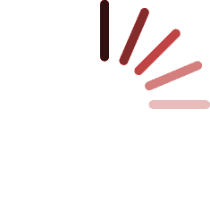

{% extends 'wizards/wiz_base.html' %} 
{% block title %} Downsampling {% endblock %}
{% block name %} Downsampling {% endblock %}
{% block head %}{% endblock %}	
{% block list %}			

{% for obj in objects %}
	{% if forloop.counter0 == 0 %} 
	<script>
		firstElm  = {{obj.getObjId}};
	</script>
	{% endif %}
	<tr id="{{obj.getObjId}}" class="no-selected" 
	style="background-color: #fafafa;" 
	onclick="compositeDownSampling(($(this)));" 
	value="{{obj.getFileName}}">
		<td>{{obj.basename}}</td>
	</tr>
	{% endfor %}
{% endblock %}		
{% block images %}
<tr>
	<td>
		<div class="image">
			
			
		</div>Micrograph
	</td>
	<td>
		<div class="image">
			
			
		</div>PSD
	</td> 	
</tr>	
{% endblock %}
{% block options %}
<table>
	<tr>
		<td>
			Downsample		
		</td>
		<td>
			<input id="downsampling" type="text" value="{{downFactor}}"/>
		</td>
		<td>
			<a href="javascript:previewPsd();" class="buttonGrey">Preview</a>
		</td>
	</tr>
</table>
<script>
	//Load the First Element of the list
	window.onload = compositeDownSampling($("tr#"+firstElm));
</script>
{% endblock %}
{% block function %}
	onclick="putSelection('input#downsampling', 'downFactor_input')"
{% endblock %}